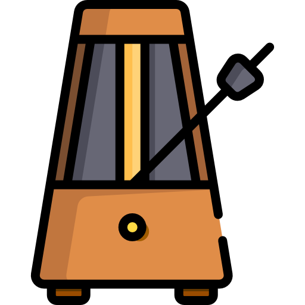

Välj din favorit låt och timea perfekt!
Alla Låtar
Lektioner
Spelrum
Hem
Hitta en Ny Låt !
Alla Låtar
spelrum
Lektioner
Metronom

Metronom bild
BPM:
120
Ändra bpm snabbre
Song ackord
Välj låt
--Välj Låt--
Get Lukcy
Dont stop Believing
Tiny Dancer
Let her go
Wanted dead or alive
Bohemian Rhapsody
Fool in the rain
Trough fire and flames
Satelli
piano
gitarr
trummor
Klicka på ackorden för att expandera dem